1
1. Dome / parachute frog clown
Central stage
Diaphragma · N. phrenicus C3–5
green frog clown under a parachute-dome, pulling the floor downward
magenta cervical crown: mummy-rye-lion = C3–C5
Respiratory anatomy mnemonic · Atemmuskulatur
A stitched multi-panel memory palace. Each respiratory muscle gets its own larger scene with a purposeful background. Exact Latin names and innervation live in the clean captions/legend — ignore any tiny pseudo-handwriting inside generated art.
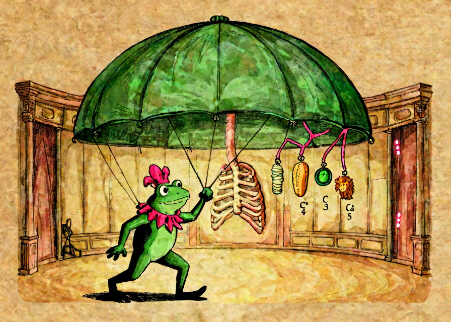
Selected panel
Diaphragma · N. phrenicus C3–5
green frog clown under a parachute-dome, pulling the floor downward
magenta cervical crown: mummy-rye-lion = C3–C5
The opera house starts moving: diaphragm floor drops, rib spaces open.
Neck and pectoral actors fix or lift the upper chest.
Serrated saw-characters lift, depress, or stabilize ribs/scapula.
Abdominal/back actors squeeze, anchor, and pull air out.
1 Dome / parachute frog clown → 2 Rib-ladder acrobats → 3 Sterno-cleido-mastoid sailor → 4 Three scalene stair goblins → 5 Major pec strongman in Kutschersitz → 6 Minor pec page / assistant → 7 Upper serrated angel → 8 Lower serrated imp → 9 Anterior saw-shark boxer → 10 Straight six-pack knight → 11 Horizontal corset master → 12 Outer diagonal sash warrior → 13 Inner opposite sash warrior → 14 Square lumbar lumberjack → 15 Wide lat swimmer / climber
Central stage
Diaphragma · N. phrenicus C3–5
green frog clown under a parachute-dome, pulling the floor downward
magenta cervical crown: mummy-rye-lion = C3–C5
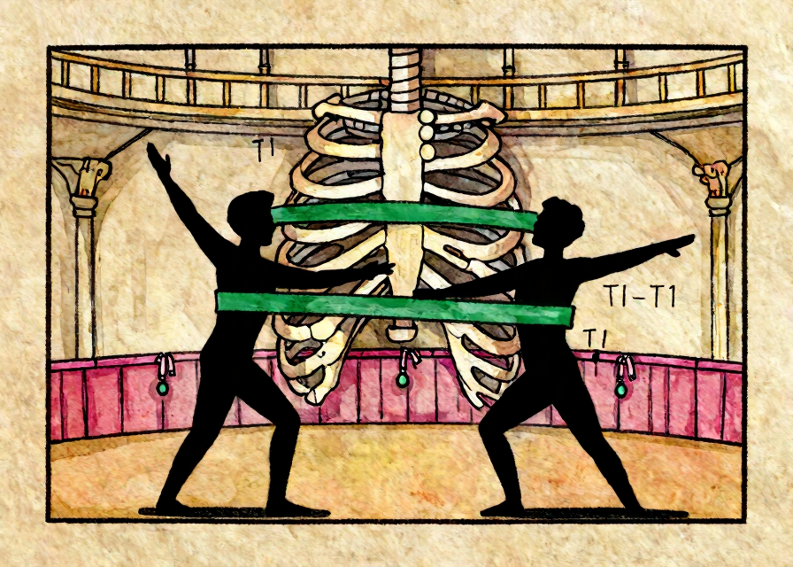
Upper rib balcony
Mm. intercostales · Nn. intercostales Th1–11
green acrobats/bands stretched between adjacent ribs
magenta Thor rib-rail: tie → two ties = Th1–Th11
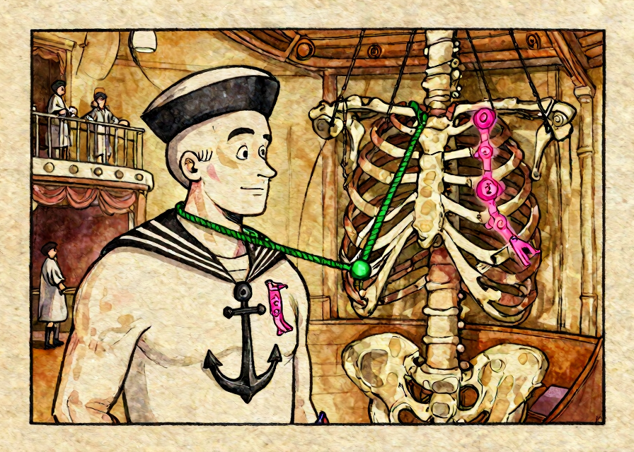
Left neck mast
M. sternocleidomastoideus · N. accessorius XI + C2–3
green sailor ropes from sternum anchor + clavicle key to mastoid mast
magenta XI flag + knee/mummy = C2–C3
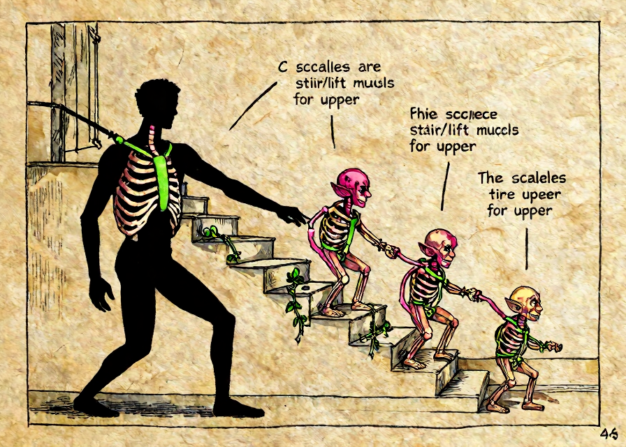
First/second-rib staircase
Mm. scaleni · C3–8 variants
green stair-straps lifting ribs 1 and 2
magenta cervical collar: mummy → ivy = C3–C8
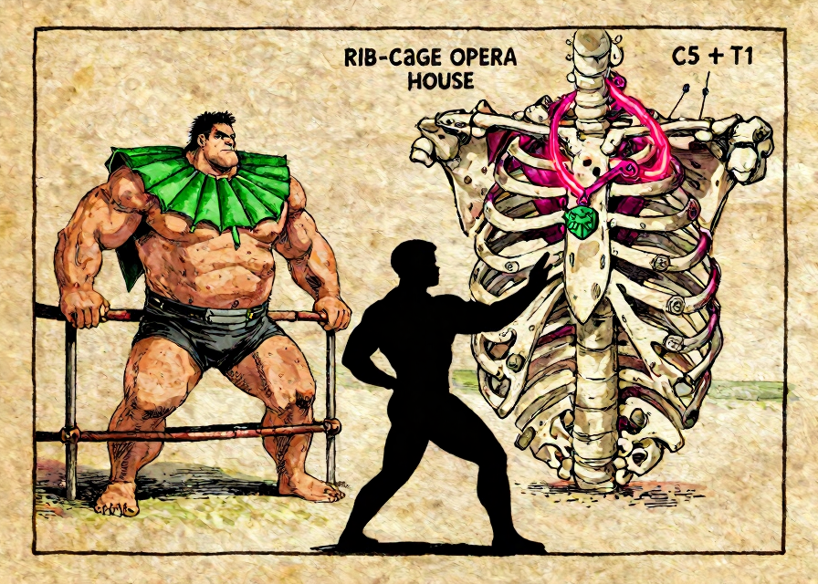
Left chest strongman pit
M. pectoralis major · Nn. pectorales C5–Th1
green fan-shaped chest cape; fixed arms lift the rib cage
magenta pectoral medal chain: lion + Thor-tie = C5–Th1
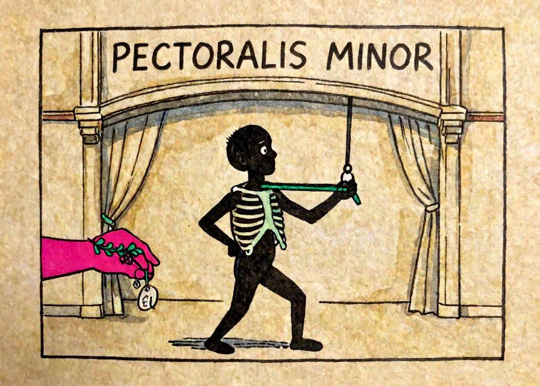
Hidden under-pec backstage
M. pectoralis minor · N. pectoralis medialis C8–Th1
small green strap from ribs 3–5 to coracoid shoulder-hook
magenta medial glove: ivy + Thor-tie = C8–Th1
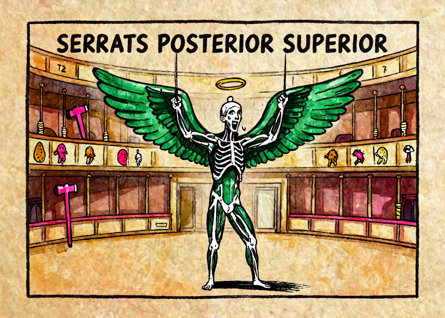
Upper posterior balcony
M. serratus posterior superior · Nn. intercostales Th2–5
green saw-tooth angel wings lifting upper ribs
magenta Thor hammer: knee → lion = Th2–Th5
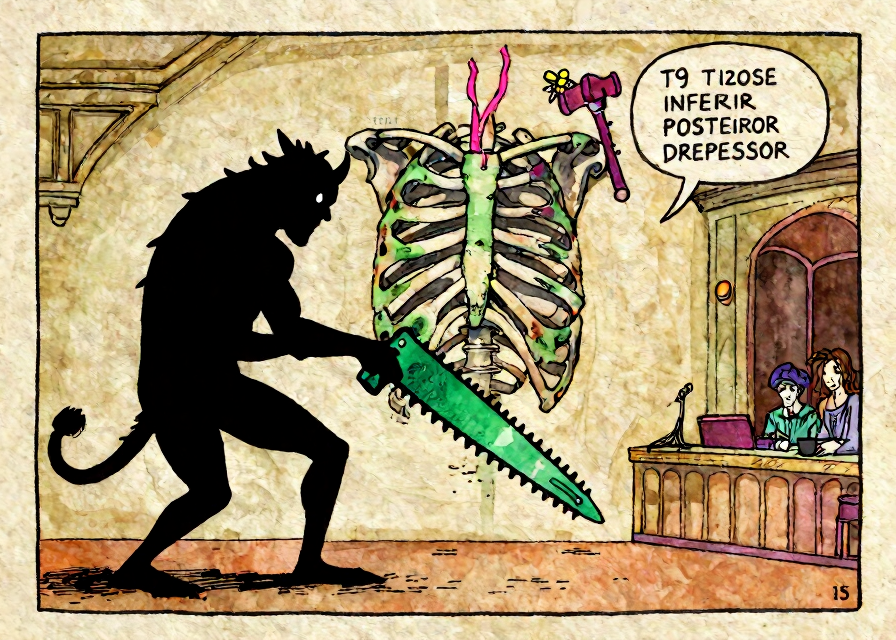
Lower posterior balcony
M. serratus posterior inferior · Nn. intercostales Th9–12
green saw-tooth imp pulling lower ribs downward
magenta Thor hammer: bee → tie-Noah = Th9–Th12
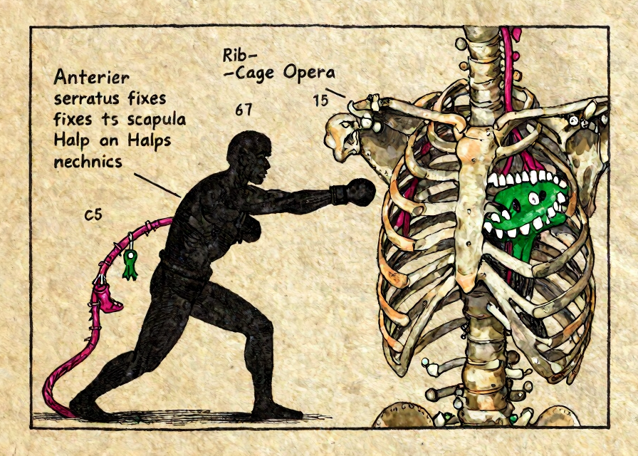
Right lateral rib wall
M. serratus anterior · N. thoracicus longus C5–7
green saw teeth on lateral ribs fixing the winged scapula
long magenta thoracic whip: lion-shoe-key = C5–C7
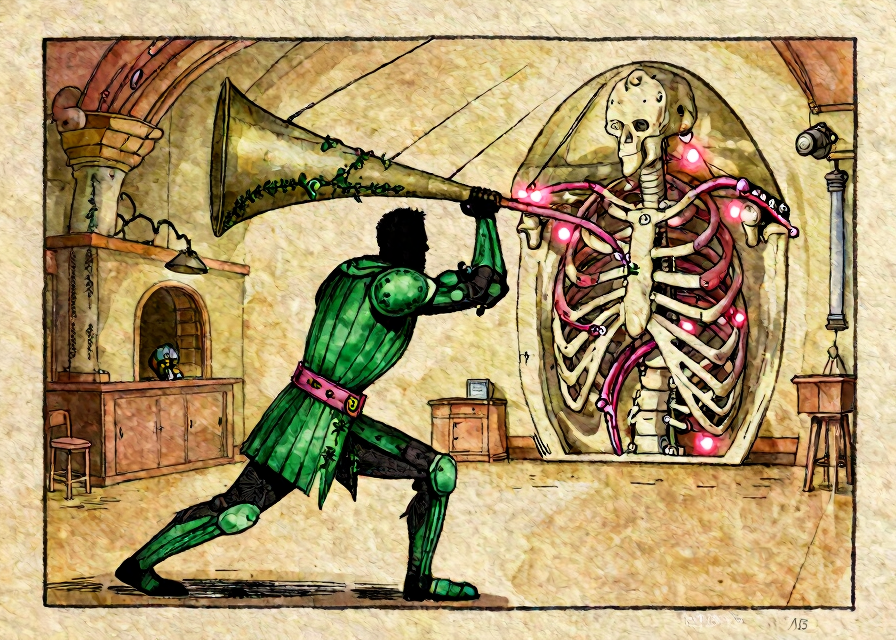
Lower central engine room
M. rectus abdominis · Th7–12
green vertical six-pack shield crunching air upward
magenta Thor belt: key → tie-Noah = Th7–Th12
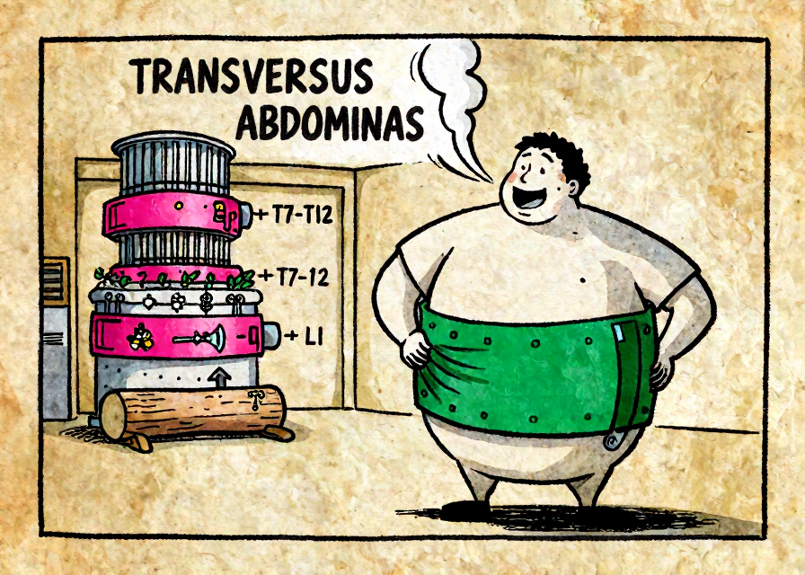
Compressor chamber
M. transversus abdominis · Th7–12 + L1
green horizontal corset squeezes abdomen inward
magenta Thor belt key→tie-Noah + lumber log = Th7–Th12 + L1
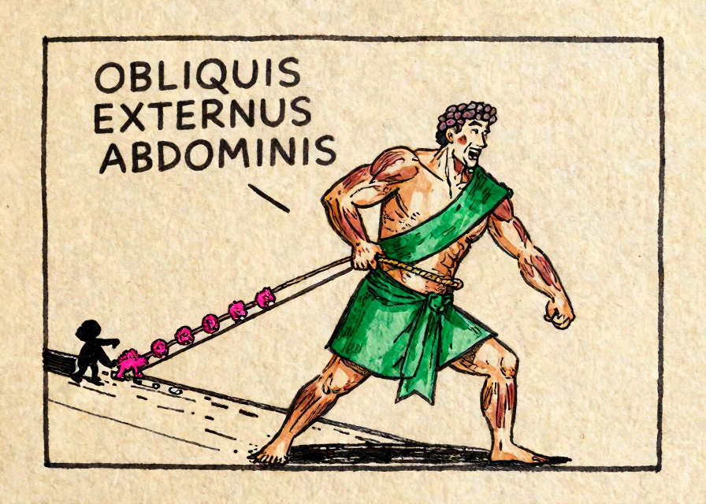
Lower left diagonal lane
M. obliquus externus abdominis · Th5–12
green down-and-in external sash compresses abdomen
magenta Thor chain: lion → tie-Noah = Th5–Th12
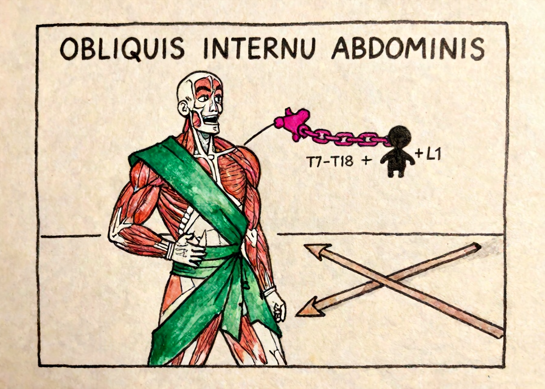
Lower right diagonal lane
M. obliquus internus abdominis · Th7–12 + L1
green up-and-in internal sash crosses the other way
magenta Thor chain key→tie-Noah + log = Th7–Th12 + L1
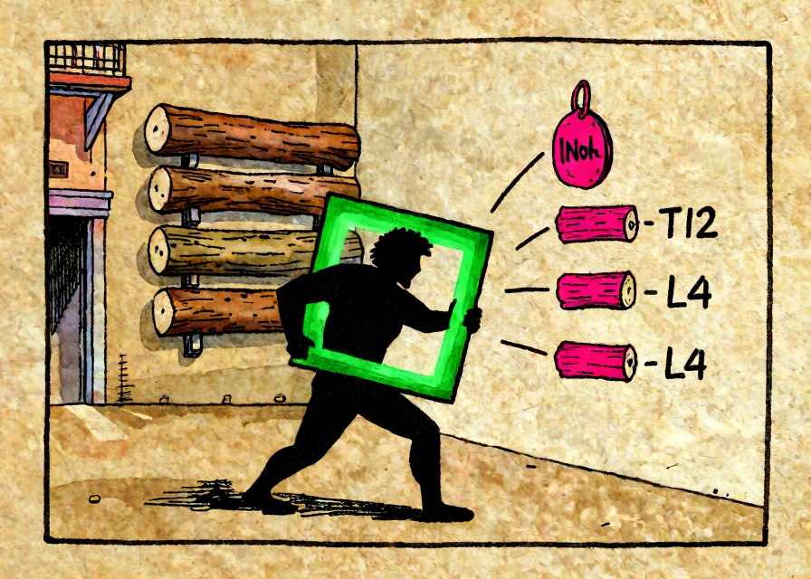
Lumbar dock
M. quadratus lumborum · Th12–L4
green square frame anchoring the 12th rib
magenta Thor tie-Noah + four lumber logs = Th12–L4
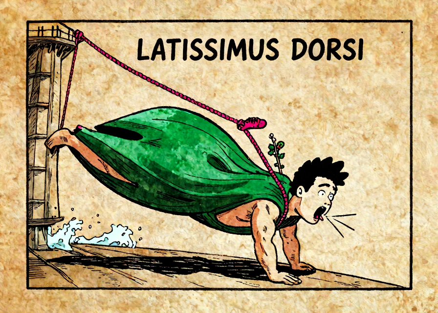
Far-right back tower
M. latissimus dorsi · N. thoracodorsalis C6–8
huge green lat-wing cloak pulls arms down for cough/forced expiration
magenta thoracodorsal cable: shoe-key-ivy = C6–C8
| # | Character / muscle | Innervation | Hooks |
|---|---|---|---|
| 1 | Dome / parachute frog clown Diaphragma | N. phrenicus C3–5 | muscle green frog clown under a parachute-dome, pulling the floor downward nerve magenta cervical crown: mummy-rye-lion = C3–C5 |
| 2 | Rib-ladder acrobats Mm. intercostales | Nn. intercostales Th1–11 | muscle green acrobats/bands stretched between adjacent ribs nerve magenta Thor rib-rail: tie → two ties = Th1–Th11 |
| 3 | Sterno-cleido-mastoid sailor M. sternocleidomastoideus | N. accessorius XI + C2–3 | muscle green sailor ropes from sternum anchor + clavicle key to mastoid mast nerve magenta XI flag + knee/mummy = C2–C3 |
| 4 | Three scalene stair goblins Mm. scaleni | C3–8 variants | muscle green stair-straps lifting ribs 1 and 2 nerve magenta cervical collar: mummy → ivy = C3–C8 |
| 5 | Major pec strongman in Kutschersitz M. pectoralis major | Nn. pectorales C5–Th1 | muscle green fan-shaped chest cape; fixed arms lift the rib cage nerve magenta pectoral medal chain: lion + Thor-tie = C5–Th1 |
| 6 | Minor pec page / assistant M. pectoralis minor | N. pectoralis medialis C8–Th1 | muscle small green strap from ribs 3–5 to coracoid shoulder-hook nerve magenta medial glove: ivy + Thor-tie = C8–Th1 |
| 7 | Upper serrated angel M. serratus posterior superior | Nn. intercostales Th2–5 | muscle green saw-tooth angel wings lifting upper ribs nerve magenta Thor hammer: knee → lion = Th2–Th5 |
| 8 | Lower serrated imp M. serratus posterior inferior | Nn. intercostales Th9–12 | muscle green saw-tooth imp pulling lower ribs downward nerve magenta Thor hammer: bee → tie-Noah = Th9–Th12 |
| 9 | Anterior saw-shark boxer M. serratus anterior | N. thoracicus longus C5–7 | muscle green saw teeth on lateral ribs fixing the winged scapula nerve long magenta thoracic whip: lion-shoe-key = C5–C7 |
| 10 | Straight six-pack knight M. rectus abdominis | Th7–12 | muscle green vertical six-pack shield crunching air upward nerve magenta Thor belt: key → tie-Noah = Th7–Th12 |
| 11 | Horizontal corset master M. transversus abdominis | Th7–12 + L1 | muscle green horizontal corset squeezes abdomen inward nerve magenta Thor belt key→tie-Noah + lumber log = Th7–Th12 + L1 |
| 12 | Outer diagonal sash warrior M. obliquus externus abdominis | Th5–12 | muscle green down-and-in external sash compresses abdomen nerve magenta Thor chain: lion → tie-Noah = Th5–Th12 |
| 13 | Inner opposite sash warrior M. obliquus internus abdominis | Th7–12 + L1 | muscle green up-and-in internal sash crosses the other way nerve magenta Thor chain key→tie-Noah + log = Th7–Th12 + L1 |
| 14 | Square lumbar lumberjack M. quadratus lumborum | Th12–L4 | muscle green square frame anchoring the 12th rib nerve magenta Thor tie-Noah + four lumber logs = Th12–L4 |
| 15 | Wide lat swimmer / climber M. latissimus dorsi | N. thoracodorsalis C6–8 | muscle huge green lat-wing cloak pulls arms down for cough/forced expiration nerve magenta thoracodorsal cable: shoe-key-ivy = C6–C8 |